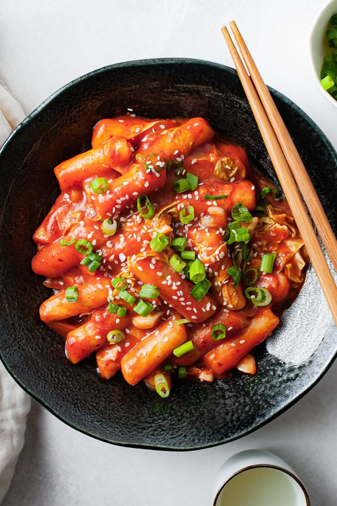

Receita de Tteokbokki

Ingredientes
- 300 g de bolinhos de arroz (tteok)
- 2 colheres (sopa) de óleo de gergelim
- Meia cebola média picada
- 2 dentes de alho picados
- Meia xícara (chá) de pasta de gochujang (pasta de pimenta coreana)
- 1 colher (sopa) de açúcar
- 1 colher (sopa) de molho de soja
- 1 pitada de pimenta vermelha em flocos
- 1 talo de cebolinha verde picado
Modo de preparo: 20 minutos
- Em uma panela com água fervente, adicione os bolinhos de arroz e cozinhe por cerca de 7 minutos ou até ficarem macios. Escorra e reserve.
- Em uma frigideira grande, aqueça o óleo de gergelim em fogo médio. Adicione a cebola picada e o alho e refogue até ficarem dourados.
- Adicione a pasta de gochujang, o açúcar, o molho de soja dissolvido na frigideira. Mexa bem até que a pasta de gochujang esteja completamente dissolvida no caldo e o molho esteja bem incorporado.
- Adicione os bolinhos de arroz cozidos ao molho e cozinhe por 10 minutos em fogo baixo, mexendo ocasionalmente, até que os bolinhos absorvam o sabor do molho e a consistência do prato fique mais espessa.
- Adicione pimenta vermelha em flocos para um toque extra de picância. Decore com cebolinha verde picada e, se quiser, sirva com um ovo cozido por cima.
- Está pronto para servir!
Curiosidades sobre o Tteokbokki:
- No século XIX, o tteokbokki era um prato da corte real coreana chamado "gungjung tteokbokki"
- Há um museu do tteokbokki em Sindang-dong, onde você pode aprender a história e fazer o seu próprio.
- Hoje, é o lanche de rua mais popular da Coreia, vendido em barraquinhas e em redes especializadas.